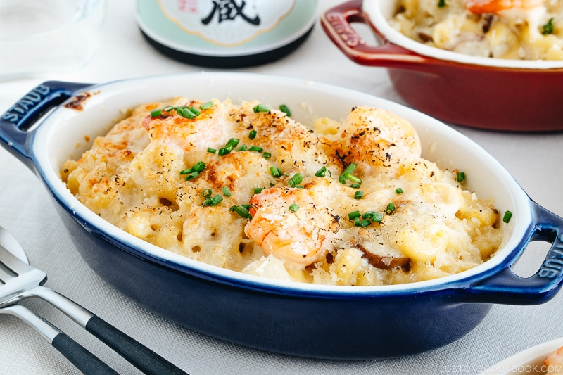

Macaroni Gratin

Description
Japanese macaroni gratin is cooked with shrimp or/and chicken, onion, and mushrooms in Béchamel sauce and topped with melted cheese, but not as cheesy as the American version.
Recipe
Ingredients
- 142 g shrimp (roughly 12 pieces)
- 227 g boneless, skinless chicken thighs (1–2 pieces)
- 2 Tbsp sake (divided)
- 1 Tbsp extra virgin olive oil
-
0.13 tsp Diamond Crystal kosher salt (divided; to season the shrimp and
chicken)
-
0.13 tsp freshly ground black pepper (divided; to season the shrimp and
chicken)
-
56 g unsalted butter (2 oz, 4 Tbsp, or ½ stick; use the full amount;
plus more for greasing the individual baking dishes, if using)
- 0.5 onion (6 oz, 170 g)
-
113 g cremini mushrooms (roughly 6 pieces; or use button mushrooms)
- 1 Tbsp mirin
For the White Sauce
- 45 g all-purpose flour (plain flour)
- 600 ml whole milk
- 120 ml heavy (whipping) cream
- 1 tsp Diamond Crystal kosher salt (to taste)
- 0.5 tsp white pepper powder (to taste)
For the Pasta
- 227 g uncooked elbow macaroni (roughly 2 cups)
- 1 Tbsp Diamond Crystal kosher salt (for the pasta water)
For the Toppings
- 50 g Gruyère cheese
- 50 g Parmigiano-Reggiano or Parmesan cheese
- 11 g panko (Japanese breadcrumbs)
- chives (finely chopped, to garnish)
Steps
- Gather all the ingredients. I use 4 individual gratin baking dishes measuring 7 x 4½ x 1¼ inches (18 x 11.5 x 3 cm) that hold about 12 fluid oz (360 ml) each. Alternatively, you can use 1 9 x 13-inch baking dish, 2 8 x 8-inch baking dishes, or 1 pan, such as a braiser.
To Prepare the Ingredients
- Peel the shells and remove the tails of 142 g shrimp. If your shrimp is not deveined, score the backs of shrimp and discard the black veins. Put the shrimp in a small bowl and add half of the 2 Tbsp sake. Coat the shrimp well with the sake to remove any odor.
- Cut 227 g boneless, skinless chicken thighs along the grain into strips ¾–1 inch (2–2.5 cm) wide. Next, angle your knife back and diagonally (nearly parallel to the cutting board), and then slice the chicken strips against the grain into pieces about ¾–1 inch (2–2.5 cm) square. This sogigiri cutting technique gives the chicken pieces equal thickness and creates more surface area for fast cooking and better absorption of the flavors. Next, put the chicken pieces in a small bowl and add the remaining sake. Coat them well to remove any odor.
- Thinly slice 0.5 onion. Next, slice 113 g cremini mushrooms ¼ inch (6 mm) thick.
To Cook
- Heat a large frying pan over medium heat. (I use a Le Creuset 3.75-QT braiser, which can go directly from oven to table.) When the pan is hot, add 1 Tbsp extra virgin olive oil. Then, add the shrimp to the pan in a single layer.
- Season with some Diamond Crystal kosher salt and freshly ground black pepper. Cook until the bottom side changes to an opaque pinkish-white color.
- Flip and cook the other side. When both sides achieve a nice pink color, transfer to a plate. Do not overcook the shrimp; it will continue to cook from the residual heat and finish cooking in the white sauce.
- To the same pan, add 56 g unsalted butter and let it melt over medium heat. Do not reduce the amount of butter; you will need this full amount of fat to make enough white sauce for your macaroni. Next, add the onion and sauté until coated with the butter.
- Add the chicken and cook, stirring occasionally, until it‘s no longer pink. Season with more salt and black pepper.
- When the chicken is no longer pink, add the mushrooms and coat with the butter.
- Add the shrimp back into the pan. Add 1 Tbsp mirin to the mixture and quickly stir into the ingredients.
To Make the White Sauce
- Next, start making the roux for the white sauce: Turn the heat to medium low and add 45 g all-purpose flour (plain flour) to the mixture, stirring quickly to combine it with the ingredients while scraping the bottom of the pot constantly.
- It‘s important to cook the flour gently during this step to get rid of its raw taste, but don‘t let it toast or turn dark. You want the roux to be a pale color. If the flour on the bottom of the pan starts to brown, reduce or turn off the heat while you finish blending it with the ingredients. Once you‘ve blended the flour well, turn the heat back on and cook for another 2 minutes.
- Then, gradually add ¼ cup of the 600 ml whole milk. Use your spatula to quickly blend the milk well with the flour mixture. The flour will absorb all the moisture and clump up.
- Continue to add more milk, ¼ cup at a time, stirring quickly after each addition to combine it well with the flour and smooth out any clumps. Make sure there are no lumps of flour left when you‘re done adding all the milk.
- Once all the milk is incorporated, add 120 ml heavy (whipping) cream and cook for 3–5 minutes, stirring frequently. The mixture will continue to thicken as it cooks.
- At this stage, taste the white sauce and season with 1 tsp Diamond Crystal kosher salt and 0.5 tsp white pepper powder to taste. Be sure to season it a bit more than you normally would. Remember, you will add in the macaroni later, which will make the sauce taste less salty. Turn off the heat and set aside.
To Cook the Macaroni
- To cook the pasta, bring a pot of water (I use 3 QT water for 8 oz macaroni) to a rolling boil. Stir in 1 Tbsp Diamond Crystal kosher salt. Then, add 227 g uncooked elbow macaroni and cook according to the package directions until al dente. Drain well.
- Set the pot of white sauce over medium-low heat and add the drained macaroni. Stir well to combine.
To Assemble and Bake
- Preheat the oven to 450ºF (230ºC). For a convection oven, reduce the cooking temperature by 25ºF (15ºC). If you will bake and serve in the oven-safe braiser, you can leave the macaroni mixture in the braiser pan as is. If you are using individual baking dishes, grease them with softened butter. Then, divide the macaroni mixture equally into the individual dishes.
- Fill each individual baking dish (I use 4 Staub 6.5-inch baking dishes) about 90% full.
- Grate 50 g Gruyère cheese and 50 g Parmigiano-Reggiano or Parmesan cheese and generously sprinkle over the macaroni mixture.
- Sprinkle 11 g panko (Japanese breadcrumbs) on top of the cheese, a bit less than 1 Tbsp for each individual baking dish. Then, place in the oven and switch to Broil on High for 3–5 minutes (depending on the distance from the heat source), or until golden brown. If you don‘t have a broiler, bake in the preheated 450ºF (230ºC) oven for 15 minutes, or until golden brown.
- When the cheese is melted and the panko is nicely browned and charred, remove from the oven.